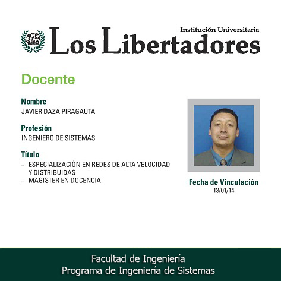

Ingeniería de Sistemas
Código SNIES: 7570 Registro CalificadoResolución No. 10885 del 10 de diciembre de 2010
El Proyecto Educativo del Programa de Ingeniería de Sistemas es el documento que expone la identidad de nuestro programa y declara su misión, visión y propósitos de formación, a partir de los cuales se ha construido su modelo curricular y pedagógico. Todo esto como respuesta a las necesidades del presente y con una amplia perspectiva hacia futuro.
MISIÓN
Formar Ingenieros de Sistemas integrales con sólida fundamentación ética, científica y humanística, emprendedores, con compromiso social, a través de la aplicación de un currículo actualizado permanentemente acorde con el estado del arte de la Ingeniería de Sistemas, con capacidad de ofrecer soluciones a problemas de la industria, aportar al desarrollo del país y al mejoramiento de la calidad de vida, proactivos a los cambios tecnológicos en los campos de Ingeniería de Software y Teleinformática.
VISIÓN
OBJETIVOS GENERALES
-
Orientar la actualización permanente del currículo.
-
Asegurar la calidad académica en concordancia con las políticas institucionales de aseguramiento de la calidad.
-
Establecer lineamientos que facíliten la gestión coordinada del equipo de administración académica en pro de la satisfacción de las necesidades y proyecciones de la academia de acuerdo con las orientaciones institucionales.
-
Propiciar y favorecer la formación integral, la generación de valores orientados ak crecimiento personal colectivo, la práctica cotidiana de la responsabilidad, la solidaridad, la tolerancia, la ética, la particiapción y la autonomía, el arte, la cultura, y el desarrollo intelectual, espiritual y físico.
-
Contribuir con el desarrollo local, regional y nacional a través de la participación activa de la comunidad académica en el análisis de las demandas sociales y la formulación de respuestas viables y efectivas.
-
Formar, en concordancia con el Proyecto Institucional libertador, ingenieros de sistemas competentes que apliquen los conocimeintos científicos y procedímentales de la ingeniería de sistemas, en la identificación y solución de problemas de contexto mediante la aplicación de las técnicas, y métodos propios de la ingeniería, a través de la planeación, diseño, evaliacuión, desarrollo, integración y gestión de procesos y sistemas cuidando e impacto social, económico, tecnológico y ambiental.
OBJETIVOS ESPECÍFICOS
-
Profundizar en las áreas de Ingeniería de Software y Teleinformática a través de las lineas de énfasis.
-
Articular la teoría con la práctica mediante la utilización intensiva de laboratorios especializados en todos los espacios académicos del área profesional.
-
Utilizar y apropiar críticamente las tecnologías de información y la comunicación (TIC), como herramientas para el aprendizaje.
-
Desarrollar en el futuro ingeniero de sistemas, mediante la aplicación de un currículo con enfoque por competencias, permanentemente actualizado al estado del arte de al ciencía y la tecnología, a través de procesos de formación integral mediados por el uso de las tecnologías.
-
Capacidad para identificar necesidades en el área de ingeniería de sistemas que se presenten en cualquiera de los sectores socio-económicos del entorno con el fin de proponer, implementar, evaluar y ajustar soluciones apropiadas.
-
Habilidad de diseñar e implementar, evaluar, ejecutar y gestionar proyectos en el área de ingeniería de sistemas, en donde se apliquen los conocimientos adquiridos en la áreas disciplinares de la profesión.
-
Capacidad de adecuar las tecnológías existentes a las necesidades particulares del entorno, realizando los desarrollos necesarios y optimizando los recursos disponibles.
-
El espíritu emprendedor, esto es, la capacidad de asumir liderazgo, aceptar riesgos, proponer cambios y ser creativo e innovador en la resolución y formulación de problemas, posibilitando soculiones que satisfagan las necesidades de las organizaciones, de la comunidad y las propias, para el logro de una mejor calidad de vida.
-
Capacidad de recurrir al conocimiento científico mediante el pensamiento creativo, el lógico y el racional, que permitan el desarrollo de la destreza la disposición, la comprensión para la interpretación y el análisis del mundo natural y social, de manera tal que se puedan proponer soluciones sustentadas en ese conocimiento.
-
Capacidad para identificar necesidades en el área de ingeniería de sistemas que se presenten en cualquiera de los sectores socio-económicos del entorno con el fin de proponer, implementar, evaluar y ajustar soluciones apropiadas.
-
Con capacidad de tomar desiciones con responsabilidad y ética en las situaciones que se presenten en su ejercicio profesional.
-
Con capacidad de reconocer la condición ciudadana de los de más actores sociales con actitud de tolerancia, respeto por el otro y por las normas.
-
Con capacidad de recurrir al conocimiento científico para proponer soluciones sustentadas en ese conocimiento a través del pensamiento creativo, lógico y racional.
-
Con capacidad de comprender y producir literatura técnica de la Ingeniería de Sistemas en la lengua materna e inglés.
-
Con manera de argumentar de forma razonable e infromada con base en cuerpo de conocimientos que fundamentan la Ingeniería de Sistemas sobre la solución adoptada para resolver un problema.
-
Con iniciativa para el desarrollo con responsabilidad de acciones creativas en el desempeño de la Ingeniéría de Sistemas.
-
Con actitud emprendedora para la creación de empresa.
-
Con capacidad para comunicarse adecuadamente en la lengua materna y en inglés.
-
Con capacidad y motivación para actualizar permanentemente sus conocimientos científicos y tecnológicos.
-
Con capacidad para realizar trabajos inter y trans disciplinario, en forma individual y como integrante de un equipo.
-
Con capacidad de usar las tecnologías de la información y la comunicación para acceder al conocimiento actualizado necesario para dar solución a problemas en el ámbito de la profesión.
PERFIL DEL PROGRAMA
Además de las actitudes y habilidades requeridas para ingresar como estudiante a los Libertadores
, el aspirante a estudiar Ingeniería de Sistemas debe acreditar:
APTITUDES
CONOCIMIENTOS:
HABILIDADES:
APTITUDES
- Para las ciencias exactas y naturales.
- Razonamiento lógico.
- Eazonamiento abstracto.
CONOCIMIENTOS:
- Fundamentales en el área de Física.
- Fundamentales en el área de Matemáticas.
- Español e Inglés básico.
HABILIDADES:
- Realizar procesos básicos de computación.
- Realizar actividades que requieran habilidad manual.
- Realizar actividades que impliquen expresión gráfica.
PERFIL DEL PROFESIONAL
El programa pretende formar un profesional en Ingeniería de Sistemas:
-
Con capacidad de concebir, especificar, diseñar, desarrollar, validar, montar,
mantener, integrar y administrar sistemas de Software y Telemática.
- Posee capacidad para planear y desarrollar la transferencia, asimilación y uso de de la tecnología de información organizacional a un nivel local, nacional e internacional.
- Es innovador con mentalidad de creación de empresa.
PERFIL OCUPACIONAL
El Ingeniero de Sistemas de los Libertadores se puede desempeñar como:
-
Gerente de Tecnología, responsable por la provisión de los servicios informáticos o tele-informáticos que sirven de base a la labor de una organización, tiene las competencias no solamente mantener en funcionamiento la infraestructura requerida, sino también de coordinar un adecuado mantenimiento, innovación y renovación de equipos de sistemas computacionales de la base.
-
Consultor Informático, experto capaz de asesorar a otras personas u organizaciones en la identificación de oportunidades informáticas para la solución de problemas de su campo de especialidad, en la identificación, formulación y valoración de alternativas, en la orientación y entrenamiento personal, así como en la puesta en marcha y seguimiento de las líneas de acción aplicables en la Ingeniería de Sistemas.
-
Emprendedor, porque tiene iniciativa propia, es visionario de oportunidades y con capacidad para
crear empresas de sistemas y tecnología.
-
Jefe de Proyectos de Sistemas, lider capaz de analizar, planear, organizar, implementar, dirigir
y controlar actividades realizadas por un grupo de investigación y desarrollo de sistemas, orientado
a crear, diseñar, elaborar, mejorar, o analizarun problema o sistema de información de una organización.
-
Director de Sistemas, encargado de todos los servicios informáticos de una compañía, así como de la infraestructura tecnológica, técnica, y talento humano que los haces posibles. Es un Adminsitrador de servicios informáticos, capaz de articularlos con los de-más recursos de la organzación.
-
Ingeniero rsponsable de aplicar normas de seguridad y desempeño de sistemas y desarrollar procedimientos para su operación y mantenimiento.
-
Analista, Programador, Jefe de Desarrollo, Jefe de sistemas, Constructor de Sistemas Informáticos: capaz de analizar, diseñar, desarrollar, integrar, innovar, operar y controlar sistemas informáticos relacionados con la Ingeniería de Software y Teleinformática.
-
Interventor y auditor de proyectos informáticos.
-
Soporte a usuarios, con la habilidad para capacitar, entrenar, dar soporte, analizar y resolver problemas operativos y técnicosa los usuarios de los sistemas de información de una organización, utilizando las herramientas tecnológicas adecuadas.
-
Docencía e Investigación aplicada, líder en la explotación y generación de nuevas técnicas, métodos, metodologías y teorías aplicadas en la Ingeniería de Sistemas.
PERFIL DEL EGRESADO
El Ingeniero de Sistemas de los Libertadores es un profesional con sólida fundamentación ética, científica y humanistíca, emprendedor, con compromiso social, acredia conocimientos científicos, tecnológicos y técnicos en el campo científico de los sistemas, que le permiten contribuir al progreso del país, al bienestar de la comunidad y a su propia realización profesional.
Es capaz de resolver problemas de ingeniería a través del ánalisis, la planeación, diseño, evaluación, desarrollo , integración y gestión de sistemas de información y soluciones telemáticas cuidando el impacto social, económico y tecnológico, puede realizar las siguientes funciones:
Es capaz de resolver problemas de ingeniería a través del ánalisis, la planeación, diseño, evaluación, desarrollo , integración y gestión de sistemas de información y soluciones telemáticas cuidando el impacto social, económico y tecnológico, puede realizar las siguientes funciones:
- Desarrollar software de calidad
- Desarrollar soluciones telemáticas
|
|||||||||||||||||||||||||||||||||||||||||||||||||||||||||||||||||||||||||||||||||||||||||||||||||||||||||||||||||||||||||||||||||||||||||||||||||||||||||||||||||||
| TOTAL ESPACIOS ACADÉMICOS | 54 | ||||||||||||||||||||||||||||||||||||||||||||||||||||||||||||||||||||||||||||||||||||||||||||||||||||||||||||||||||||||||||||||||||||||||||||||||||||||||||||||||||
| TOTAL CRÉDITOS DEL PROGRAMA | 144 | ||||||||||||||||||||||||||||||||||||||||||||||||||||||||||||||||||||||||||||||||||||||||||||||||||||||||||||||||||||||||||||||||||||||||||||||||||||||||||||||||||
